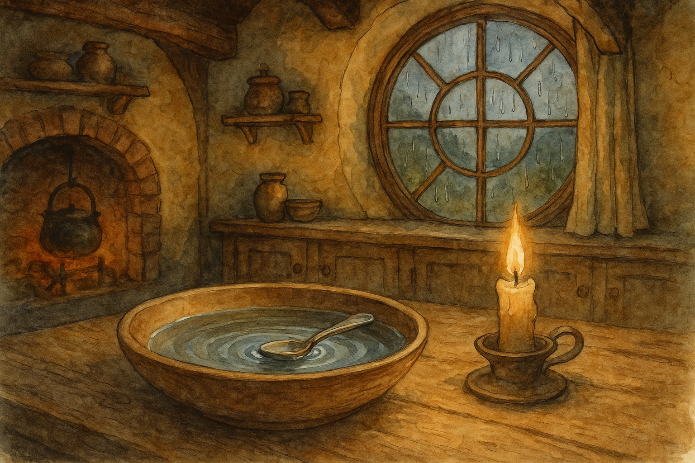

Fourth Age, in the Shire when spring rain makes the eaves sing and the Water carries the first willow-leaves downstream
There are folk who can let a thing go, as easy as smoke out of a chimney. And there are folk who—try as they will—keep their hands shut around it until it grows warm, and heavy, and troublesome. The Shire has a word for such matters: we call them spoons, because a spoon is forever turning up where it is not wanted.
It began, as many Shire troubles do, with a visit and a pudding.
Old Mistress Tunnelly of Bywater—who could remember the Winter of the White Wolves, and did so often, even in July—had come to Hobbiton to see her niece and to inspect the state of her niece’s pantry, as if pantries were things that could grow wild for want of pruning. She came in a shawl that smelled faintly of damp hedgerow and peppermint, and she brought with her a small tin of sugar-plums that nobody was allowed to touch until after supper, on principle.
Now, after supper, there was custard. There is always custard, if the cook has any pride and the guests have any appetite. Custard requires a spoon, and the spoons in that house were all respectable pewter, save one: a little silver spoon with a thin handle and a pale moon of a bowl, worn smooth by years and stirring. It had belonged (so the story went) to a Took who once ate trifle at a birthday in Michel Delving and decided never again to use common metal for sweet things.
“That one,” Mistress Tunnelly said at once, pointing as if she were choosing a rival at the archery-butts. “Hand me that spoon.”
The niece hesitated, which was mistake number one. “It’s only a spoon,” she said, which was mistake number two. And mistake number three was the tone—light, as if spoons could not carry weight.
Mistress Tunnelly took the silver spoon and turned it over in her fingers. It was not much to look at, being tarnished in a shy way and slightly bent from some long-ago fall. But she held it as though it were a document, or a key.
“This spoon,” she said, “has been in more puddings than you’ve had hot dinners. It has been in more mouths than you’ve had birthdays. It has heard talk that would make your kettle whistle. And it has one failing: it won’t keep its place.”
“Spoons don’t have places,” the niece said, and her husband laughed, and the younger cousins snickered into their napkins like hedgehogs under leaves.
Mistress Tunnelly’s eyes went narrow and bright. “Don’t they?”
She rose, very slowly, so that everyone had time to regret, and carried the spoon to the wash-bowl by the sink. The bowl was plain wood, with the grain rubbed dark where hands had set it down and picked it up, day after day. In it was fresh water drawn from the pump, clear and cold and honest.
“Now,” she said, “watch. This is a lesson no one takes the first time.”
She laid the spoon on the water as gently as a leaf on a pond.
It floated.
That was odd enough to hush the room. The youngest cousin’s snicker died in his throat and became a cough. The husband leaned in, frowning as if he could correct the matter by looking at it sternly. The niece reached forward, then stopped, because no one likes to be the first to touch a strange thing when an elder is watching.
But Mistress Tunnelly was not finished. She lifted the spoon and pressed it down with two fingers until the water crept over the silver and made a thin shining skin. She held it there a moment, then let go.
The spoon came up again, brisk as a cork, and bobbed on the surface as if it had only gone below to fetch its breath.
“Try,” she said.
The husband tried first, because husbands will try first at anything that looks like it ought to be simple. He pushed the spoon down harder than was polite, and the water swirled and slapped the bowl’s sides. When he lifted his hand, the spoon rose again, turning this way and that, and settled where it had settled before, half in shadow, half in candlelight.
“It’s caught on something,” he said, peering into the bowl.
“Nothing,” Mistress Tunnelly said. “It isn’t caught. It’s set.”
They tried a stone next—one of those smooth river-stones some folk keep on sills to remind them that time passes whether you like it or not. The husband laid the stone on the spoon’s bowl and pressed both down together. The water covered them. He removed his hand.
The stone sank at once, straight to the bottom like a decision made in a temper. The spoon rose alone and floated again, the water beading on it as on oiled cloth.
“Well,” said the niece, and she sounded a little frightened now, “what does it mean?”
“It means,” said Mistress Tunnelly, “that some things will not go down just because you wish them to. Some words won’t sink, no matter how quickly you say them. Some promises won’t drown, no matter how often you forget them. And some little wrongs—small as a spoon—keep popping up in your face until you either mend them or learn to eat your pudding without tasting it.”
She leaned closer to the bowl, and the spoon rocked, as if listening.
“Long ago,” she went on, “there was a hobbit who borrowed a spoon like this and never brought it back. He meant to, mind you. He meant to as sincerely as any hobbit means to mend a fence in summer. But the days went on, and there were harvests, and there were other spoons, and the borrowed one slid into a drawer and was forgotten. Forgotten is not the same as forgiven.”
“Who was it?” one of the cousins asked, unable to help himself.
Mistress Tunnelly smiled, and the smile was as thin as the spoon’s handle. “It was a decent hobbit,” she said. “Not a thief. Not a villain. Only the sort who thinks later is a place you can put things, like a pocket.”
The husband swallowed. The niece’s cheeks went pink, because she knew, suddenly, of a neighbour’s pie-tin that had never been returned, and of a borrowed book from Michel Delving with a page dog-eared and a spot of jam on it.
“This spoon,” Mistress Tunnelly said softly, “would not stay lost. It floated in wash-bowls. It turned up in dough. It slid out of drawers at the worst moment, clinking on the floor like a warning. At last, the hobbit grew tired of being haunted by an ounce of silver, and he did what he should have done at the beginning.”
“He returned it,” the niece whispered.
“Aye,” Mistress Tunnelly said. “And when he laid it on the owner’s palm—properly, with an apology, and a bit of honey-cake besides—the spoon at last took to its place. Not in a drawer, mind you. It took to its place in the world.”
She lifted it now from the water. The spoon dripped, bright at the edges, and for a moment the candle-flame trembled in its curve like a little captive star.
“So,” she said, and looked each of them in the eye in turn, “before you laugh at a spoon, think on what it may be trying to remind you. The Shire is full of small things that keep the peace: a gate-latch that catches clean, a hedge cut true, a word kept, a borrowed thing returned. We are not great folk, and we need not be. But we must be steady. That is our kind of courage.”
Then she dried the spoon, set it neatly by the custard dish, and sat down as though nothing strange had happened at all. And after that, though no one spoke of the matter openly, there was a week of quiet returning all across Hobbiton: tins and trowels, quilts and kettles, books and buttons, turning up at doorsteps as if they had simply remembered where they belonged.
As for the silver spoon, some say it floats still, whenever a promise is being pressed too hard under the surface. Others say that is nonsense, and that spoons float only when there is grease in the bowl. But I have noticed that the folk who say nonsense are often the very ones who, the next morning, appear at a neighbour’s gate with a borrowed thing in hand and an air of having thought better of it overnight.
— Bilbo